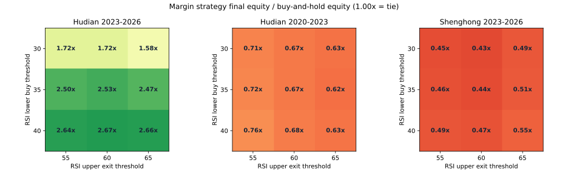

参数碰巧选中，还是行情阶段合适？
固定九组邻近参数 · 沪电与胜宏 · 576组复算 · 没有另选赢家
结论：不是孤立阈值奏效，跨阶段失效更明显
沪电近三年，九组邻近参数的融资版本全部跑赢全仓，收益范围729.43%至1297.36%，说明35/60不是唯一表现好的组合。可是同样九组参数在沪电更早历史全部亏损，回撤70.39%至72.86%；在胜宏近三年则全部跑输持有。
这削弱了“恰好选中两个神奇数字”的解释，却没有证明稳定股性。证据更符合“这一类反转规则适应了某段行情”的解释。整个策略家族及研究区间本身仍是在看过历史后确定的，邻近参数稳定不能消除这种筛选偏差。
预先固定的检验
RSI仍为2日，买入阈值固定30、35、40，卖出阈值固定55、60、65，构成9组；保留当前35/60中心。业绩门槛、50%中间仓位、09:45减仓、10:00买入、佣金、股息税假设、成交容量和融资规则全部不变，不调整止盈或止损。每组都报告，不按结果挑新默认。
两只股票、现金与150%融资分别比较；本金100万元、万1佣金最低5元、单边5及10基点滑点。沿用已核验的制度适配：沪电10%涨跌幅，胜宏2020-08-24起20%；T+1、100股及成交量约束，融资年息6%、买入后欠款不超过净资产50%，允许被动超仓。
完整区间2023-10-09至2026-10-08；更早段2020-01-02至2023-09-28。固定年度每年10月9日起至下一年10月9日前；年度和更早段各自以100万元重新开始，不能拼接为一条连续曲线。
九组参数在不同股票与阶段

格子是期末资产÷全仓期末资产；1.00倍为持平，不是收益率，也不是胜率。统一色标；中间格为现行35/60。
| 股票／账户 | 区间 | 滑点 | 跑赢持有 | 收益范围 | 回撤范围 | 周期胜率范围 |
|---|---|---|---|---|---|---|
| 沪电／现金 | full | 5基点 | 6/9 | 346.89%～569.34% | 19.10%～22.57% | 67.86%～70.37% |
| 沪电／现金 | older | 5基点 | 0/9 | -27.49%～-10.06% | 56.21%～59.74% | 57.14%～62.50% |
| 沪电／融资 | full | 5基点 | 9/9 | 729.43%～1297.36% | 25.17%～32.32% | 70.30%～73.79% |
| 沪电／融资 | older | 5基点 | 0/9 | -29.90%～-13.88% | 70.39%～72.86% | 59.68%～70.18% |
| 胜宏／现金 | full | 5基点 | 0/9 | 188.56%～246.66% | 30.34%～36.03% | 61.86%～68.04% |
| 胜宏／现金 | older | 5基点 | 0/9 | -13.01%～6.62% | 44.16%～49.21% | 61.70%～68.00% |
| 胜宏／融资 | full | 5基点 | 0/9 | 294.33%～402.67% | 43.49%～49.50% | 60.42%～65.56% |
| 胜宏／融资 | older | 5基点 | 0/9 | -15.25%～10.07% | 57.23%～63.65% | 61.90%～70.27% |
拆成年度，不能只看总收益
| 股票／账户 | 区间 | 滑点 | 跑赢持有 | 收益范围 | 回撤范围 | 周期胜率范围 |
|---|---|---|---|---|---|---|
| 沪电／现金 | year1 | 5基点 | 0/9 | 15.39%～30.47% | 14.46%～20.23% | 60.00%～66.67% |
| 沪电／现金 | year2 | 5基点 | 1/9 | 54.18%～77.05% | 19.71%～22.89% | 66.67%～71.79% |
| 沪电／现金 | year3 | 5基点 | 9/9 | 131.41%～214.16% | 15.25%～18.24% | 69.77%～74.36% |
| 沪电／融资 | year1 | 5基点 | 0/9 | 20.56%～42.09% | 18.41%～24.35% | 64.29%～72.41% |
| 沪电／融资 | year2 | 5基点 | 9/9 | 96.52%～138.04% | 25.59%～32.40% | 64.10%～72.97% |
| 沪电／融资 | year3 | 5基点 | 9/9 | 215.06%～443.12% | 22.95%～24.50% | 69.05%～73.68% |
| 胜宏／现金 | year1 | 5基点 | 0/9 | -6.23%～19.50% | 28.19%～36.03% | 47.37%～66.67% |
| 胜宏／现金 | year2 | 5基点 | 0/9 | 115.96%～143.89% | 21.64%～24.20% | 69.05%～78.95% |
| 胜宏／现金 | year3 | 5基点 | 9/9 | 14.89%～38.34% | 25.95%～31.52% | 55.26%～64.29% |
| 胜宏／融资 | year1 | 5基点 | 0/9 | -13.87%～15.44% | 42.08%～49.50% | 41.18%～61.54% |
| 胜宏／融资 | year2 | 5基点 | 0/9 | 184.05%～248.94% | 26.84%～32.63% | 67.50%～81.08% |
| 胜宏／融资 | year3 | 5基点 | 9/9 | 16.33%～52.20% | 37.02%～42.01% | 54.76%～61.90% |
沪电融资第一年九组全部跑输持有，第二、三年九组全部跑赢。现金第一年0/9、第二年1/9、第三年9/9跑赢。胜宏现金和融资的前两年全部落后，第三年全部领先。这种阶段差异比邻近阈值的差异更值得关注；不能把第三年的避跌效果推断为此前持续领先。
单边10基点压力测试
| 股票／账户 | 区间 | 滑点 | 跑赢持有 | 收益范围 | 回撤范围 | 周期胜率范围 |
|---|---|---|---|---|---|---|
| 沪电／现金 | full | 10基点 | 6/9 | 296.96%～483.60% | 19.69%～23.31% | 66.67%～69.81% |
| 沪电／现金 | older | 10基点 | 0/9 | -35.11%～-19.87% | 58.47%～62.44% | 55.38%～63.77% |
| 沪电／融资 | full | 10基点 | 9/9 | 599.02%～1159.74% | 25.95%～33.00% | 68.00%～72.12% |
| 沪电／融资 | older | 10基点 | 0/9 | -40.93%～-27.13% | 72.29%～75.52% | 60.00%～68.18% |
| 胜宏／现金 | full | 10基点 | 0/9 | 162.77%～215.11% | 30.84%～36.26% | 62.24%～66.30% |
| 胜宏／现金 | older | 10基点 | 0/9 | -21.52%～-3.56% | 45.08%～50.84% | 55.77%～70.37% |
| 胜宏／融资 | full | 10基点 | 0/9 | 244.03%～328.15% | 43.83%～49.97% | 58.76%～65.93% |
| 胜宏／融资 | older | 10基点 | 0/9 | -22.12%～-0.80% | 58.37%～64.56% | 56.41%～68.29% |
胜率均指完整“空仓到空仓”的持仓周期，未结束持仓按市值计入账户损益和回撤，不放入已结束周期胜率分母；本实验没有定义独立做T往返，不提供日内做T胜率。完整CSV还保留盈利日、空仓/平盘、尾部日亏损、参与度、费用利息和未平仓损益。
少数日期对超额收益有多重要？
只检验当前35/60。先把每天“策略净值涨幅÷全仓净值涨幅”取对数，累加得到最终相对财富；再把贡献最大的5、10、20天的相对贡献人为置零，相当于那些天改为与持有表现相同。这只是算术集中度压力测试：没有重演持仓和后续成交，不能称作可执行策略收益、剔除交易后的真实回测，或未来发生概率。
| 股票／账户 | 处理的相对贡献日 | 原相对财富 | 置零后相对财富 |
|---|---|---|---|
| 沪电／现金 | 最佳5天 | 1.217倍 | 0.770倍 |
| 沪电／现金 | 最佳10天 | 1.217倍 | 0.536倍 |
| 沪电／现金 | 最佳20天 | 1.217倍 | 0.294倍 |
| 沪电／现金 | 最差5天 | 1.217倍 | 1.956倍 |
| 沪电／融资 | 最佳5天 | 2.533倍 | 1.584倍 |
| 沪电／融资 | 最佳10天 | 2.533倍 | 1.097倍 |
| 沪电／融资 | 最佳20天 | 2.533倍 | 0.596倍 |
| 沪电／融资 | 最差5天 | 2.533倍 | 4.071倍 |
| 胜宏／现金 | 最佳5天 | 0.318倍 | 0.177倍 |
| 胜宏／现金 | 最佳10天 | 0.318倍 | 0.116倍 |
| 胜宏／现金 | 最佳20天 | 0.318倍 | 0.055倍 |
| 胜宏／现金 | 最差5天 | 0.318倍 | 0.693倍 |
| 胜宏／融资 | 最佳5天 | 0.436倍 | 0.234倍 |
| 胜宏／融资 | 最佳10天 | 0.436倍 | 0.153倍 |
| 胜宏／融资 | 最佳20天 | 0.436倍 | 0.070倍 |
| 胜宏／融资 | 最差5天 | 0.436倍 | 0.952倍 |
沪电现金原相对财富1.217倍，最佳5天贡献置零后变为0.770倍；融资由2.533倍，置零最佳10天后剩1.097倍，最佳20天后0.596倍。这说明超额收益对少数日子的相对表现敏感，但“去掉最佳日后变差”本身必然偏向负面，不能据此证明运气或过拟合。最差5天也做了对称处理，避免只呈现一边。
沪电融资最大的5个相对贡献日依次为2025-04-07、2025-02-05、2026-07-10、2026-07-02、2025-04-08。下表列出真实账户当日涨跌；赚取超额可能是少跌或空仓避跌，并不等于准确买到上涨。
| 日期 | 策略当日涨跌 | 持有当日涨跌 | 当日相对财富变化 |
|---|---|---|---|
| 2025-04-07 | -0.02% | -9.84% | 10.89% |
| 2025-02-05 | -0.04% | -9.86% | 10.89% |
| 2026-07-10 | 3.86% | -5.66% | 10.09% |
| 2026-07-02 | -1.93% | -9.90% | 8.85% |
| 2025-04-08 | -2.10% | -9.81% | 8.56% |
上述日期按事后结果选出用于解释，并不能提前识别。相对贡献日期也不一定有当日成交，不能叫“最佳交易日”。
旧目标与当前风险偏好分开记录
当前目标仍优先控制回撤与胜率，没有收益硬下限。以下只留存旧标准的对照数量，不用来淘汰所有风险改善；也不把单段通过当作整体达标。
| 股票／账户／5基点全段 | 保留持有收益且回撤降低至少25% | 期末财富达到持有1.20倍 |
|---|---|---|
| 沪电／现金 | 6/9 | 4/9 |
| 沪电／融资 | 9/9 | 9/9 |
| 胜宏／现金 | 0/9 | 0/9 |
| 胜宏／融资 | 0/9 | 0/9 |
原“现金”标准仅针对现金方案；融资列同样公式是数值对照，不冒称现金达标。至少2/3固定年度、更早行情和冻结后独立证据要求仍未同时满足。
核验与下一步
576组复算；中心参数的192个原结果完全复现，16组相对贡献由Python独立重算并核对。没有修改执行引擎、默认方案或实时信号；所有历史行情均已见过，不是新盲测。
数据继续截至2026-10-08。分钟与日线极值/成交量不一致、历史财报修订版本、历史融资资格和成交延迟仍未彻底核验；这些局限也适用于本页。10月10日休市，没有新增冻结后的交易日证据。本次没有再次请求相同历史数据。
下一步应研究“何时反转有效、何时应保留趋势仓位”的可提前识别边界，并与简单固定仓位对照，防止把降低仓位本身的减险误认为择时能力。先冻结候选及风险评价方式，再接受后续行情的检验；本批没有给出新最佳参数。